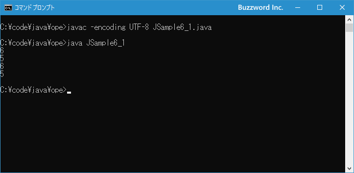

インクリメント演算子とデクリメント演算子
インクリメント演算子とデクリメント演算子はそれぞれ演算の対象が 1 つの単項演算子です。インクリメント演算子は対象の値を 1 つ増やし、デクリメント演算子は対象の値を 1 つ減らします。ここでは Java で用意されているインクリメント演算子とデクリメント演算子の使い方について解説します。
インクリメント演算子とデクリメント演算子とは
インクリメント演算子は対象の値を 1 つ増やし、デクリメント演算子は対象の値を 1 つ減らします。次の 2 種類の演算子が用意されています。
| 演算子 | 使用例 | 意味 |
|---|---|---|
| ++ | A++ 又は ++A | Aの値を1増やす |
| -- | A-- 又は --A | Aの値を1減らす |
インクリメント演算子は例えば次のように使います。
int num = 5; num++; System.out.println(num); // 6 が出力される
同じようにデクリメント演算子は例えば次のように使います。
int num = 5; num--; System.out.println(num); // 4 が出力される
どちらの演算子も対象の値を直接 1 増やすまたは減らします。その為、整数リテラルや浮動小数点数リテラルに対してこの演算子を使うことはできません。使用できるのは変数に対してだけです。
int num; num = 5++; // コンパイルエラー
どちらの演算子も対象の値の後ろだけでなく前に置くこともできます。
int num = 5; num++; ++num; num--; --num;
ただどちらに置くかによって結果が異なる場合がありますので注意が必要です(あとで解説します)。
それでは簡単なサンプルプログラムを作って試してみます。テキストエディタで次のように記述したあと、 JSample6-1.java という名前で保存します。
class JSample6_1{
public static void main(String[] args){
int num = 5;
num++;
System.out.println(num);
num--;
System.out.println(num);
++num;
System.out.println(num);
--num;
System.out.println(num);
}
}
コンパイルを行います。
javac -encoding UTF-8 JSample6_1.java
その後で、次のように実行してください。
java JSample6_1

インクリメント演算子とデクリメント演算子を交互に使って変数に格納されている値を 1 増やしたり 1 減らしたりしました。
前置と後置の違いについて
インクリメント演算子とデクリメント演算子にはそれぞれ前置と後置があります。
int num = 5; // 後置 num++; num--; // 前置 ++num; --num;
次のような使い方の場合は前置であっても後置であっても結果は同じになります。
int x = 5; x++; System.out.println(x); // 6
int x = 5; ++x; System.out.println(x); // 6
ただ次のようにインクリメント演算子またはデクリメント演算子を使った演算を行った結果を別の変数に代入する場合には結果が違ってきます。
int x = 5; int y; y = x++; System.out.println(x); // 6 System.out.println(y); // 5
int x = 5; int y; y = ++x; System.out.println(x); // 6 System.out.println(y); // 6
後置を使った場合、変数 x の値が 1 増える前の値がまず変数 y に代入され、その後で変数 x の値が 1 増えます。それに対して、前置を使った場合、変数 x の値を 1 増やしたあとで増えたあとの値が変数 y に代入されます。その為、前置と後置で結果が違ってきます。
つまり後置の演算は次のように書き換えることができます。
y = x++; というのは y = x; x = x + 1; と同じ
それに対して前置の演算は次のように書き換えることができます。
y = ++x; というのは x = x + 1; y = x; と同じ
インクリメント演算子とデクリメント演算子を使用する場合は、前置と後置のどちらを使用したら自分が思った通りの演算を行ってくれるのかをよく考えて使うようにしてください。
-- --
Java で用意されているインクリメント演算子とデクリメント演算子の使い方について解説しました。
( Written by Tatsuo Ikura )

著者 / TATSUO IKURA
初心者～中級者の方を対象としたプログラミング方法や開発環境の構築の解説を行うサイトの運営を行っています。